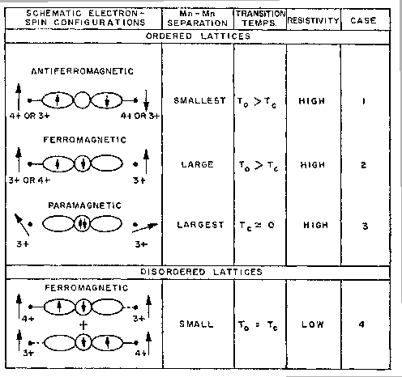

|
 |
Though theoretical treatment of manganites is elegant and powerful, the resulting physical pictures can not be obtained without extensive scientific computation. Here we introduce an intuitive phenomenological rule for qualitatively understanding the experimental phase diagram. The Goodenough-Kanamori (GK) rules make a correspondence between the magnetic structure and charge and orbital arrangements of the Mn ions. It is based on the semi-covalence exchange mechanism first proposed by Goodenough [81,82] to describe the non ionic bonding nature between Mn and O atoms. In 1961, Kanamori [82] compiled the GK rules after revisiting the relation between electronic, magnetic, and lattice structures. It states that, for neighboring Mn ions bridged by an oxygen atom, if one and only one of the anti bonding eg orbitals with respect to the oxygen atom is filled, ferromagnetic coupling between Mn ions will result. Anti-ferromagnetic coupling is resulted in all other cases. Together with the consideration of lattice elastic energy, the GK rules have successfully predicted the magnetic and structural phase diagram of the cubic perovskite manganites [79,81]. Though simple, even now, the GK rules are a useful intuitive guide to manganite properties.
It might be useful to distinguish the semi-covalence exchange from the superexchange commonly occurring also via the non-magnetic anions. In the superexchange model based on the non-ionic character of the lattice as well, it is assumed that the exchange energy is smaller than the energy difference between the lattice-orbitals and the cation d orbitals. Thus the interaction is through virtual hopping of the anion electrons. Another assumption is that only one electron can be excited from the anion orbital to neighboring cation d orbitals at one time, and the hopping probability depends on the electron spin due to its coupling with the cation d orbital electron spins following the Hund rules. As a result of both virtual hoping and anti ferromagnetic direct exchange of the uncompensated anion spin with the other cation, the magnetic coupling between the cations is ferromagnetic when the cation d orbitals are less than half filled, and anti-ferromagnetic when half, or more than half, filled. Therefore, in the case of manganites, the superexchange model will always lead to ferromagnetism, which apparently can not explain the anti ferromagnetic phase observed in manganites.